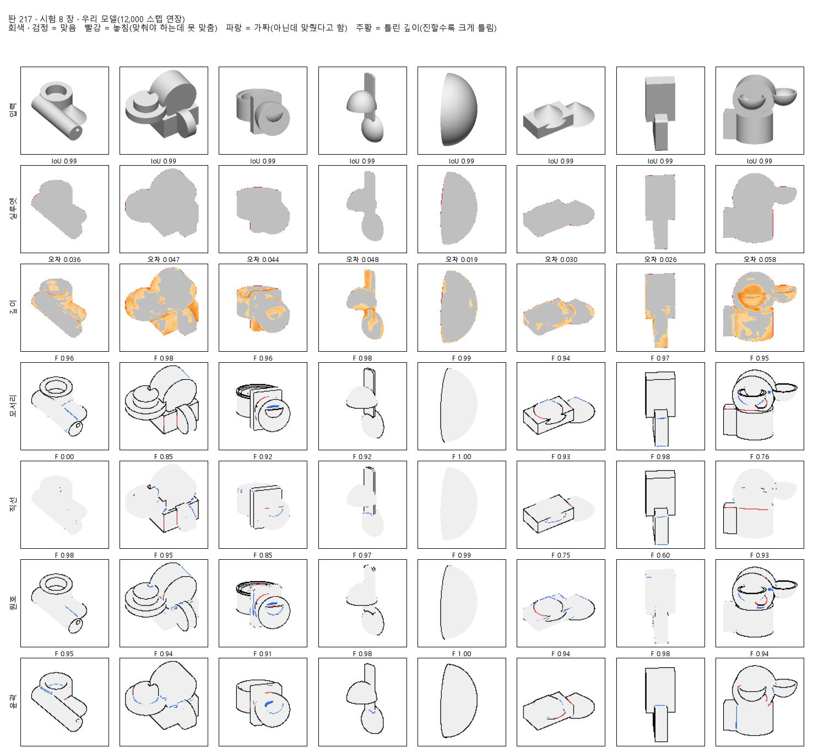
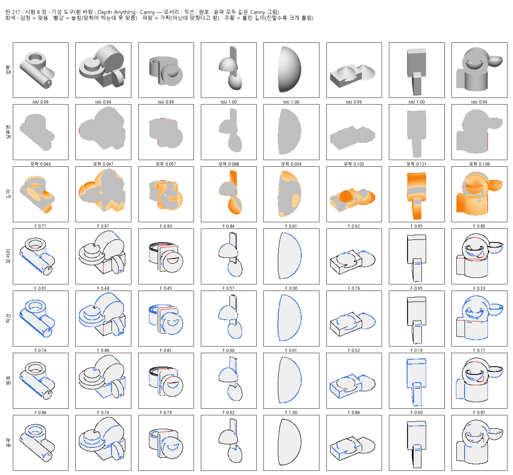

m1_tr0217_h000_그림여섯
렌더 이미지 한 장에서 출력 그림 여섯 장(실루엣 · 깊이 · 모서리 · 직선 · 원호 · 윤곽)을 배울 수 있나?
결정 표(돌리기 전에 정함)
- 만약 시험에서 모서리F · 윤곽F 각각 최선 기준선 + 0.05 이상 · 깊이SSI ≤ 최선 기준선 × 0.8 · 실루엣IoU ≥ 최선 기준선 − 0.01
다음 tr218 — 선 대 깊이(기성 대비 이득) · 모서리 대 윤곽 가르기 - 만약 위가 아니고 학습일부 모서리F − 시험 모서리F > 0.15
다음 외움 → 학습 데이터 몫 25 · 50 · 100 % 학습 곡선부터 - 만약 위가 아니고 학습일부 모서리F < 0.6
다음 못 배움 → 망 · 표현(디코더 · 해상도)부터 - 만약 그 밖
다음 그림별로 어디가 모자란지(직선 · 원호 · 윤곽 · 깊이) 보고 그 하나만 고침
분석
한 줄로
물음: 이미지 한 장을 보고, 같은 시점의 그림 여섯 장(실루엣 · 깊이 · 모서리 · 직선 · 원호 · 윤곽)을 그려 낼 수 있나?
답: 렌더에서는 배운다(결정 표 「가」 · 6,000 스텝 · 미리 정한 판정). 학습에 안 쓴 시험 부품에서 모서리 0.95 · 윤곽 0.95 · 깊이 오차 0.053 으로 기성 도구(Canny · Depth Anything)를 판정선만큼 넘었고, 학습 부품과 시험 부품 점수가 같아 외우지 않았다. 12,000 스텝 연장은 조금 더 나아졌다(모서리 0.958). 가장 약한 것은 직선(0.74)이다 — 학습 부품에서도 0.68 로 낮아, 외움이 아니라 못 배우는 쪽이다.
왜 이 판을 했나
tr215 · 216 에서 「정답 그림을 주면 뒤가 된다」(표면 0.98 · 선으로 모서리 0.84)를 봤다. 남은 큰 미지수가 「이미지에서 그 그림을 낼 수 있나」 다(사용자 「학습을 들어갈 만한 것 같은데 · 문제 파악이랑 가설이랑 해서」). tr210 은 안 보이는 면까지 축 묶음으로 통째로 맞히게 해서 외웠다 — 이번 출력은 입력과 같은 화소 · 보이는 것만이다.
바꾼 것 하나
출력을 바꿨다 — tr210 의 세 축 묶음(안 보이는 면 포함 · 돌림 24 최소 손실) 대신 입력 시점 그대로의 그림 여섯 장. 망은 tr184 · 210 처럼 DINOv2-base 얼림 + 디코더(패치 16² → 128² · 입력 그림을 64² · 128² 에 다시 넣음).
결과


| 시험 부품 100(그림 198) | 우리 6,000(판정) | 우리 12,000(연장) | 기성 | 검색 | 바보 | 입력 0 |
|---|---|---|---|---|---|---|
| 실루엣 IoU | 0.990 | 0.992 | 0.995(흰 바탕) | 0.629 | 0.593 | 0.591 |
| 깊이 오차(낮을수록 좋음) | 0.053 | 0.051 | 0.074(Depth Anything) | 0.159 | 0.171 | 0.171 |
| 모서리 F | 0.952 | 0.958 | 0.874(Canny) | 0.351 | 0.039 | 0.380 |
| 윤곽 F | 0.949 | 0.952 | 0.847(Canny) | 0.302 | 0.000 | 0.296 |
| 직선 F | 0.744 | 0.741 | 0.403 | 0.272 | 0.177 | 0.177 |
| 원호 F | 0.885 | 0.897 | 0.702 | 0.291 | 0.020 | 0.268 |
| 선 전체(모서리 ∪ 윤곽) F | 0.976 | 0.982 | 0.961 | — | — | 0.387 |
판정(6,000): 모서리 +0.078 · 윤곽 +0.102 · 깊이 0.72 배 · 실루엣 −0.005(−0.01 안) → 가: 배움. 학습일부 − 시험 모서리F −0.001(외움 없음). 12,000 연장도 「가」(−0.002). 곡선(검증 손실): 0.589 → 0.508 → 0.490 → 0.471 → 0.450 → 0.440(6,000) → 0.435 → 0.435 → 0.423 → 0.425 → 0.414 → 0.413(12,000) · 입력 0 은 1.72 에서 그대로.
왜 이렇게 나왔나
확인한 것
- 망이 입력을 본다 — 입력 0 으로 같은 학습을 하면 검증 손실 1.72 · 모서리 0.38(평균 그림을 그리는 수준).
- 기성 도구와의 차이는 선의 「자리」 가 아니라 「종류」 다 — 모서리 ∪ 윤곽은 Canny 0.961 대 0.976 이지만, 모서리 · 윤곽 · 직선 · 원호로 가르면 Canny 는 칸마다 가짜가 된다(그림).
- 곡면이 약한 게 아니다(사용자 짐작을 숫자로 확인) — CAD 면 종류로 화소를 가르면 깊이 오차 평면 0.041 · 곡면 0.037 · 선은 원호 0.885 · 윤곽 0.949 가 직선 0.744 보다 높다. (처음에 깊이 이차 미분으로 곡면을 가른 것은 큰 원통을 평면으로 놓쳐 쓸 수 없었음 — 제 실수)
- 직선은 학습 부품에서도 0.68 — 외움이 아니라 못 배움.
짐작 (아직 확인 안 함)
- 직선이 약한 까닭: 같은 밝기의 두 평면이 만나는 모서리는 렌더 음영에서 선이 거의 안 보인다. 정답 직선 화소마다 양쪽 밝기 차이와 놓침을 같이 세면 가려진다.
한계
- 흰 바탕 렌더 — 실루엣은 흰 바탕만 떼도 0.995 · 실물 사진은 배경 · 그림자 · 질감 · 원근이 있어 Canny 도 우리도 다를 것.
- 시험은 같은 생성기 부품(분포가 같음) · 그림 198 장.
- 직선 F 는 직선이 몇 개 없는 그림에서 출렁인다(0.00 이 나오는 그림이 있음).
- 연장 규칙은 2,000 스텝 곡선을 본 뒤 정함(카드에 적음) · 자동 연장 스크립트가 경로 · 한글 변수 탓에 돌지 않아 같은 조건으로 손으로 시작(제 실수).
배운 것과 다음
렌더에서는 이미지 한 장 → 그림 여섯 장(점 + 선)이 배워진다 — 모서리 · 윤곽 0.95 · 깊이 0.05, 외움 없음. 기성 도구와의 차이는 선의 종류 가르기와 깊이에 있다.
- 실물 사진(tr220 · H4) — 렌더로 배운 망이 원화CAD짝 실물 사진에서도 되나(화소 정답이 없으니 합친 뒤 3D 로).
- 직선 원인 가르기(싼 분석) — 밝기 차이 대 놓침.
- tr218(선 대 깊이 · 모서리 대 윤곽)은 렌더 안에서는 차이가 이미 작아 뒤로.
판 기록
- 카드 · 코드 커밋 123d1b0(돌리기 전) · 연장 규칙 01bc478 · 6,000 판정 4522a2b · 자 검사 하네스/자검사/실루엣IoU · 깊이SSI · 선F_2px.json
- 데이터 out/설명/캐드부품/모델217/정답.npy(git 밖 · 생성기 12,067 부품 × 2 시점 × 6 장 · 실패 0) · 무게 무게_본_6000.pt · 무게_본_12000.pt(git 밖)
- 판정 잼_6000.json · 잼_12000.json · 곡선 곡선_본.json · 그림 혼동_시험_본6000/12000.png · 혼동_시험_기성.png